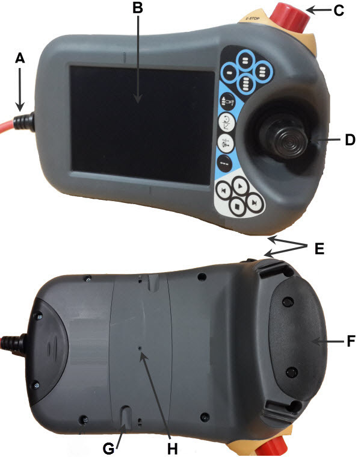
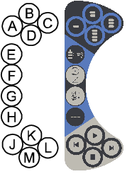
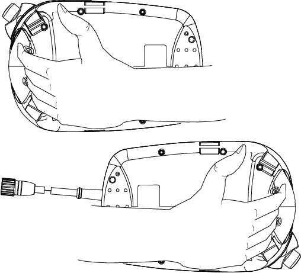
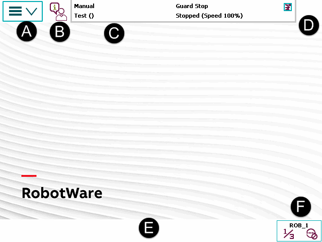

FlexPendant是一种手持式操作装置，在操作机器人时用于执行多项任务：运行程序；微动控制机械手；修改程序等。
FlexPendant可在恶劣的工业环境下持续运作。其触摸屏易于清洁，且防水、防油和防止意外的焊接飞溅物。
FlexPendant由软件和硬件组成，其本身就是一台完整的计算机。其通过集成线缆和接头连接到机器人控制器。
hot plug按钮选项使其能在自动模式下断开FlexPendant的连接并继续运行。
这些为 FlexPendant 的主要组成部分。

A | 连接器 |
B | 触摸屏 |
C | 紧急停止按钮 |
D | 控制杆 |
E | USB 端口 |
F | 三位使动装置 |
G | 触摸笔 |
H | 重置按钮 |
使用控制杆移动操纵器。它称为微动控制机器人。控制杆移动操纵器的设置有几种.
将 USB 存储器连接到 USB 端口以读取或保存文件。USB 存储器在对话和 FlexPendant 浏览器中显示为驱动器 /USB:可移动的。
 | 注意 在不使用时请盖上 USB 端口的保护盖。 |
触摸笔随 FlexPendant 提供，放在 FlexPendant 的后面。拉小手柄可以松开笔。
使用 FlexPendant 时用触摸笔触摸屏幕。不要使用螺丝刀或者其他尖锐的物品。
如果FlexPendant在运行期间发生冻结，按下重置按钮重新启动FlexPendant。
重置按钮会重置 FlexPendant，而不是控制器上的系统.
FlexPendant 上有专用的硬件按钮。您可以将自己的功能指定给其中四个按钮。

A - D | 预设按键，1 - 4。有关如何定义其各项功能的详细信息，请参见中的“预设按键” 一节。 |
E | 选择机械单元。 |
F | 切换运动模式，重定向或线性。 |
G | 切换运动模式，轴 1-3 或轴 4-6。 |
H | 切换增量。 |
J | Step BACKWARD（步退）按钮。按下此按钮，可使程序后退至上一条指令。 |
K | START（启动）按钮。开始执行程序。 |
L | Step FORWARD（步进）按钮。按下此按钮，可使程序前进至下一条指令。 |
M | STOP（停止）按钮。停止程序执行。 |
操作FlexPendant时，通常会手持该设备。惯用右手者用左手持设备，右手在触摸屏上执行操作。而惯用左手者可以轻松通过将显示器旋转180度而使用右手持设备。

下图显示了FlexPendant触摸屏的各种重要元件。

A | 主菜单 |
B | 操作员窗口 |
C | 状态栏 |
D | 关闭按钮 |
E | 任务栏 |
F | 快速设置菜单 |
主菜单中的可选项如下：
HotEdit
输入和输出
微动控制
Production Window（运行时窗口）
Program Editor（程序编辑器）
Program Data（程序数据）
Backup and Restore（备份与恢复）
Calibration（校准）
Control Panel（控制面板）
Event Log（事件日志）
FlexPendant Explorer（FlexPendant 资源管理器）
系统信息
等。
将在Main menu。
操作员窗口显示来自机器人程序的消息。程序需要操作员作出某种响应以便继续运行时往往会出现该情况。将在操作员窗口）中介绍。
状态栏显示与系统状态有关的重要信息，如操作模式、电机开启/关闭、程序状态等。它将在状态栏）一节中介绍。
点击关闭按钮将关闭当前打开的视图或应用程序。
通过主菜单，您可打开多个视图，但一次只能操作一个。任务栏会显示所有打开的视图，并可在这些视图之间切换。
快速设置菜单包含对微动控制和程序执行进行的设置。它将在"快速设置"菜单）一节中介绍。